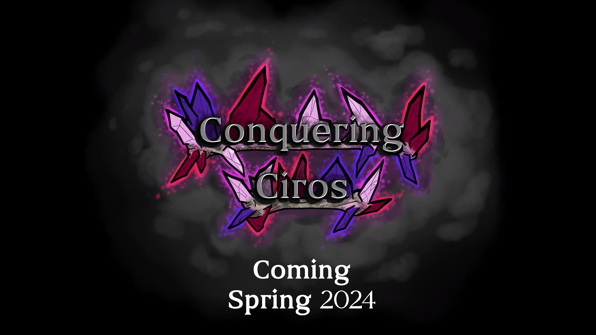
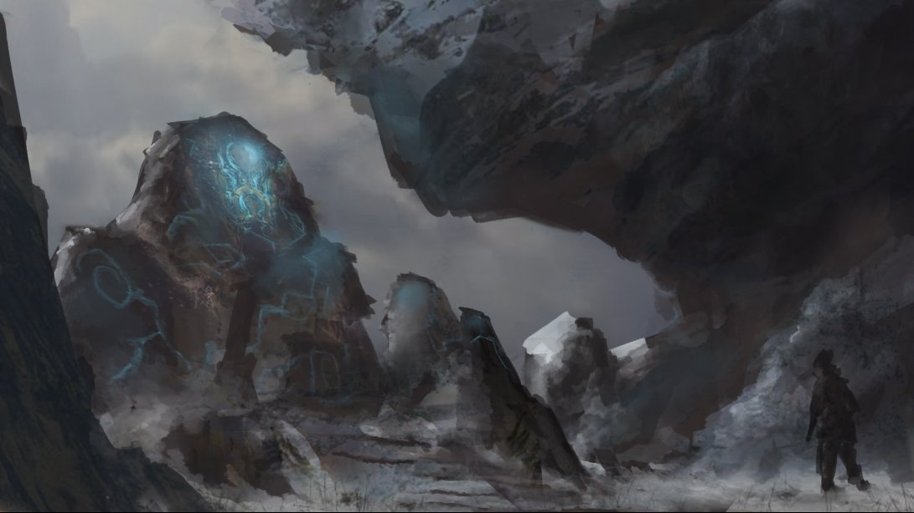

Conquering Ciros
(Release: Spring 2024)
Teaser Trailer
Conquering Ciros is a bullet-hell/rogue-lite game where you play as the resurrected prince of Ciros. I'm the Sound Design Lead for this project, both creating sound assets, while managing both the music and sound design team.

Beyond Skyrim: Atmora (Release: TBD)
Atmora Website
Atmora is part of Beyond Skyrim, which is a mod project adding all of Tamriel into Skyrim. I'm currently sound designing for this project, creating sound assets that fit the Elder Scrolls universe!